Izzi Generation 20260814
One aggregated entry for the 2026-08-14 make-check generation run: 26 guilloche/moire/surface-tension reference passes. Open any pass below to reach its individual review page.
Izzi generation commit: d8cfd8b18fbee62e5a163ec40f085a47731992d7 · 26 passes
-
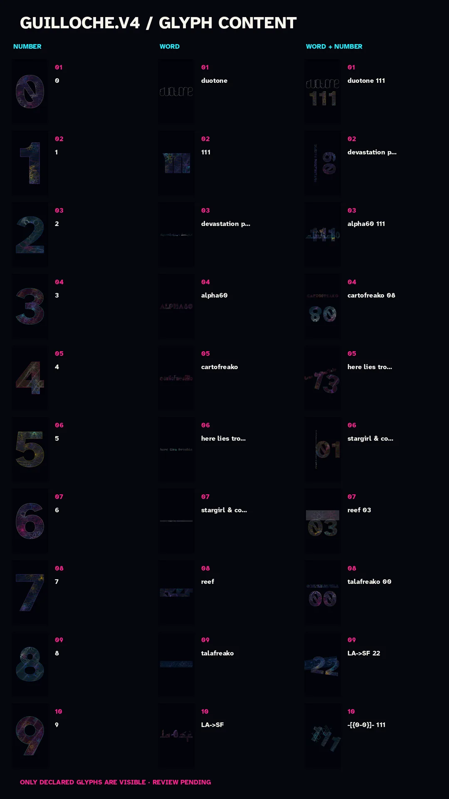
Guilloche v4 grid — all
Guilloche v4 grid — all from the make-check reference image set (guilloche/moire/surface tension). Source: outputs/review/feedback/visual/guilloche/round-05/static/guilloche-v4-all-grid.png. WebP q82 review copy flattened on black.
-
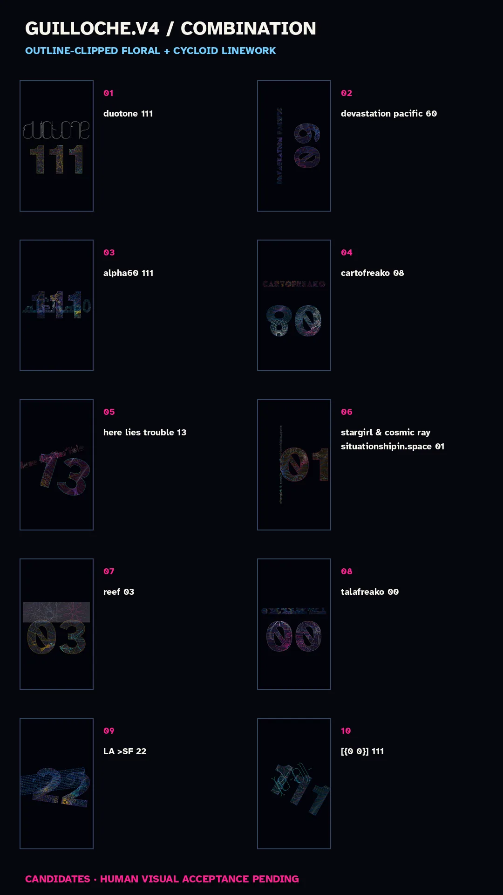
Guilloche v4 grid — combination
Guilloche v4 grid — combination from the make-check reference image set (guilloche/moire/surface tension). Source: outputs/review/feedback/visual/guilloche/round-05/static/guilloche-v4-combination-grid.png. WebP q82 review copy flattened on black.
-
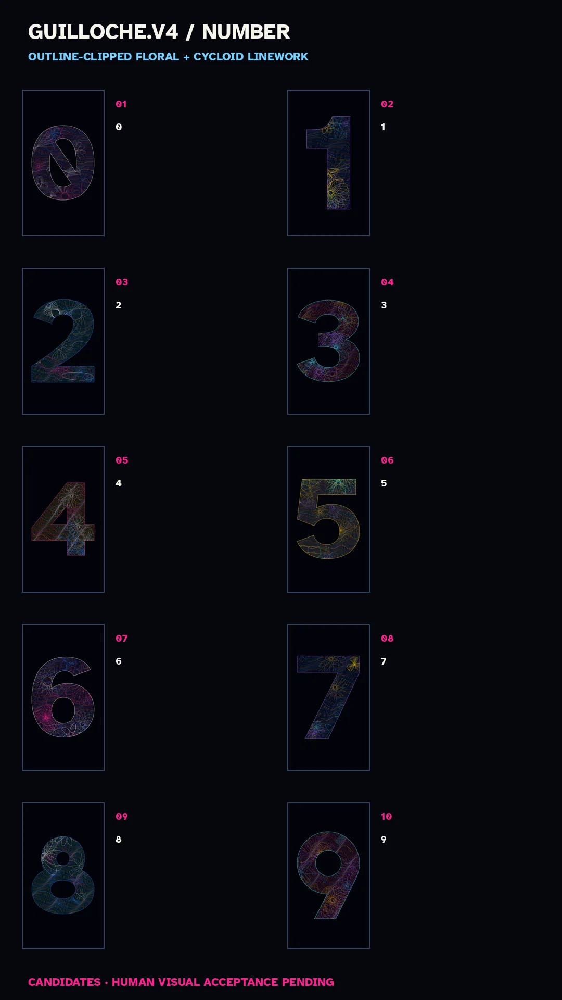
Guilloche v4 grid — number
Guilloche v4 grid — number from the make-check reference image set (guilloche/moire/surface tension). Source: outputs/review/feedback/visual/guilloche/round-05/static/guilloche-v4-number-grid.png. WebP q82 review copy flattened on black.
-
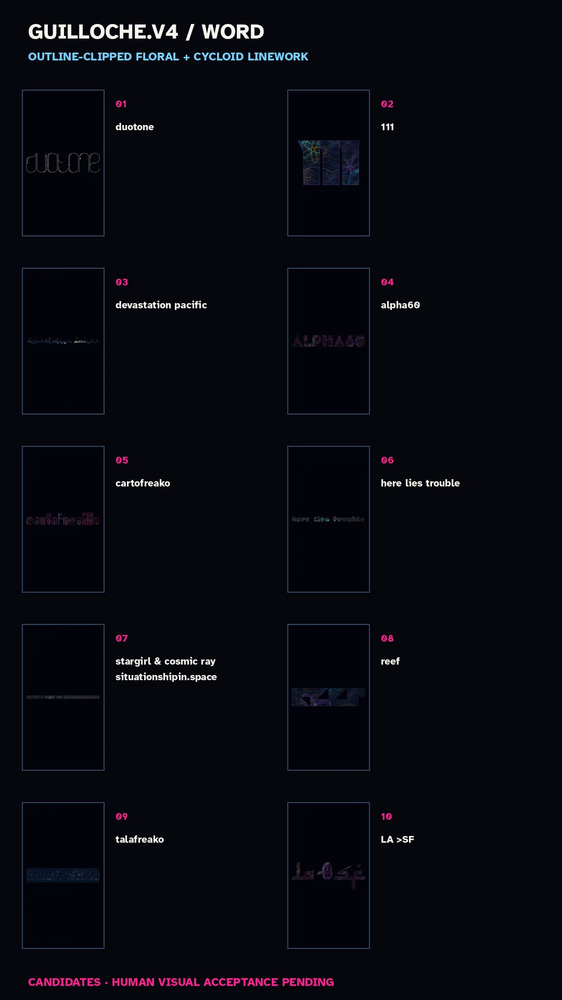
Guilloche v4 grid — word
Guilloche v4 grid — word from the make-check reference image set (guilloche/moire/surface tension). Source: outputs/review/feedback/visual/guilloche/round-05/static/guilloche-v4-word-grid.png. WebP q82 review copy flattened on black.
-
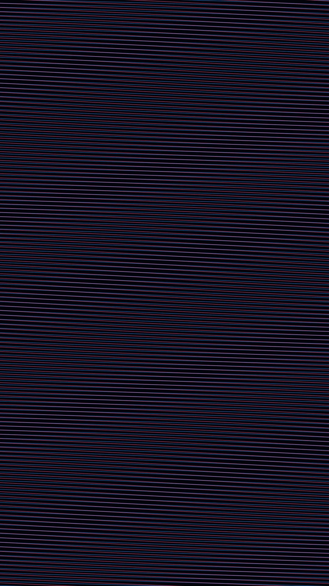
Moire v1 plate 01 — linear close beat
Moire v1 plate 01 — linear close beat from the make-check reference image set (guilloche/moire/surface tension). Source: outputs/ad-hoc/moire.v1/png/moire-01-linear-close-beat.png. WebP q82 review copy flattened on black.
-
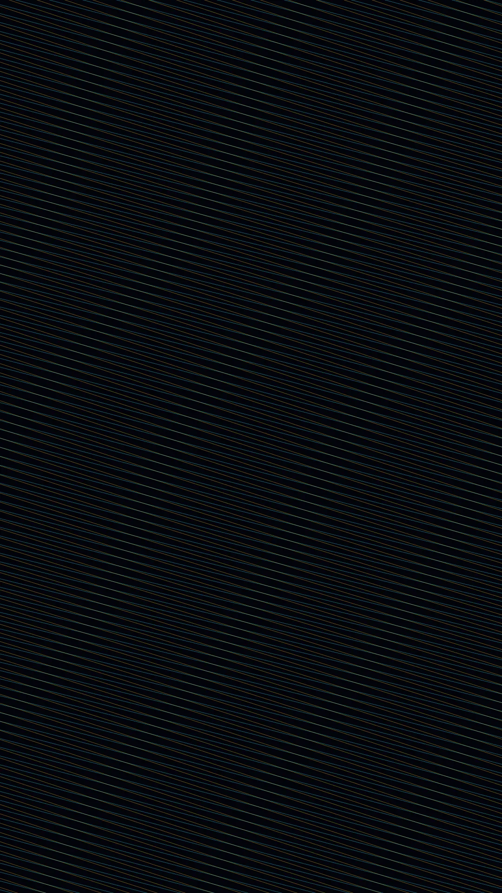
Moire v1 plate 02 — linear cross current
Moire v1 plate 02 — linear cross current from the make-check reference image set (guilloche/moire/surface tension). Source: outputs/ad-hoc/moire.v1/png/moire-02-linear-cross-current.png. WebP q82 review copy flattened on black.
-
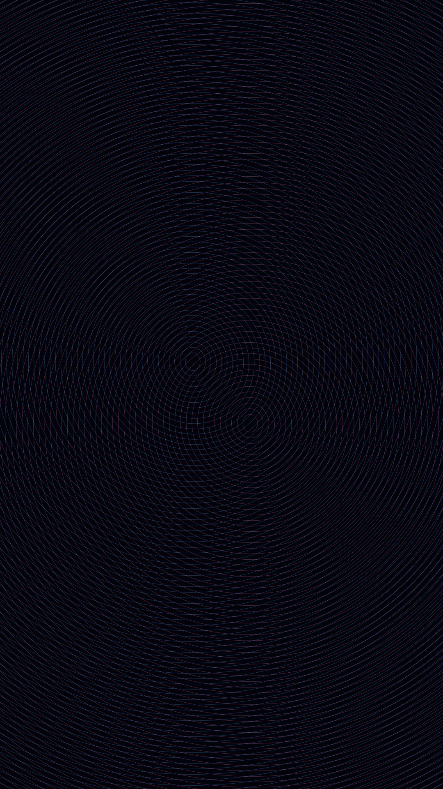
Moire v1 plate 03 — eccentric rings
Moire v1 plate 03 — eccentric rings from the make-check reference image set (guilloche/moire/surface tension). Source: outputs/ad-hoc/moire.v1/png/moire-03-eccentric-rings.png. WebP q82 review copy flattened on black.
-
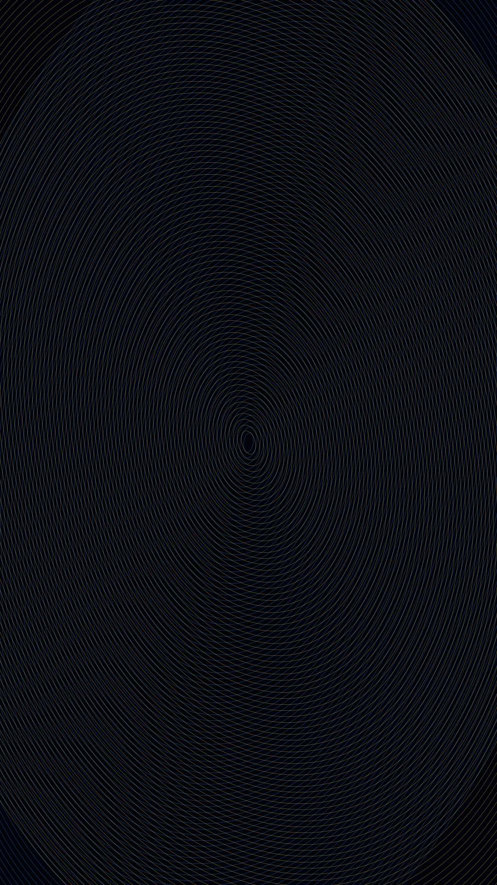
Moire v1 plate 04 — elliptic registration
Moire v1 plate 04 — elliptic registration from the make-check reference image set (guilloche/moire/surface tension). Source: outputs/ad-hoc/moire.v1/png/moire-04-elliptic-registration.png. WebP q82 review copy flattened on black.
-
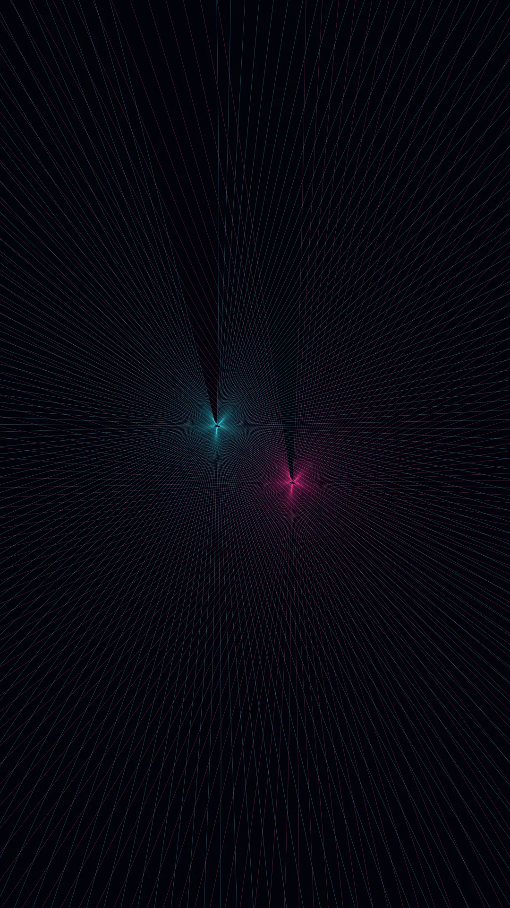
Moire v1 plate 05 — radial parallax
Moire v1 plate 05 — radial parallax from the make-check reference image set (guilloche/moire/surface tension). Source: outputs/ad-hoc/moire.v1/png/moire-05-radial-parallax.png. WebP q82 review copy flattened on black.
-
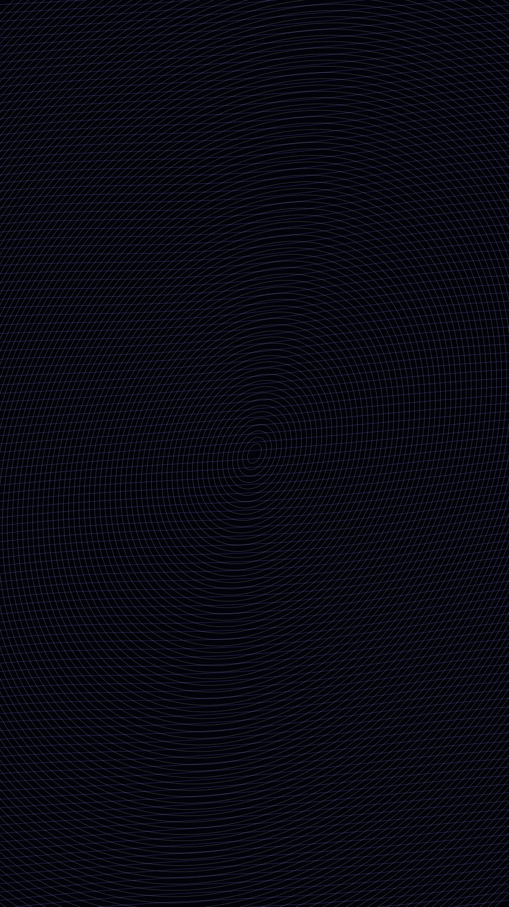
Moire v1 plate 06 — orbit line collision
Moire v1 plate 06 — orbit line collision from the make-check reference image set (guilloche/moire/surface tension). Source: outputs/ad-hoc/moire.v1/png/moire-06-orbit-line-collision.png. WebP q82 review copy flattened on black.
-
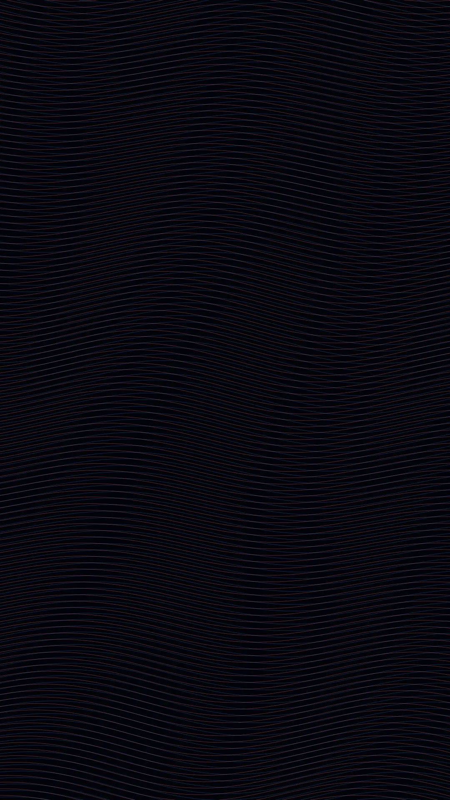
Moire v1 plate 07 — sine curtain
Moire v1 plate 07 — sine curtain from the make-check reference image set (guilloche/moire/surface tension). Source: outputs/ad-hoc/moire.v1/png/moire-07-sine-curtain.png. WebP q82 review copy flattened on black.
-
Moire v1 plate 08 — destabilized braid
Moire v1 plate 08 — destabilized braid from the make-check reference image set (guilloche/moire/surface tension). Source: outputs/ad-hoc/moire.v1/png/moire-08-destabilized-braid.png. WebP q82 review copy flattened on black.
-
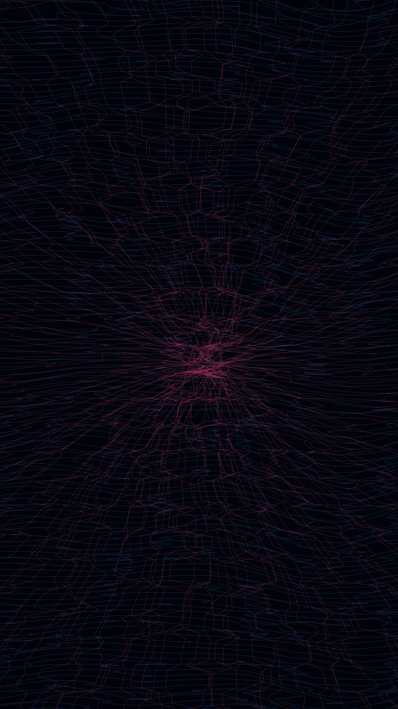
Moire v1 plate 09 — glitch registration
Moire v1 plate 09 — glitch registration from the make-check reference image set (guilloche/moire/surface tension). Source: outputs/ad-hoc/moire.v1/png/moire-09-glitch-registration.png. WebP q82 review copy flattened on black.
-
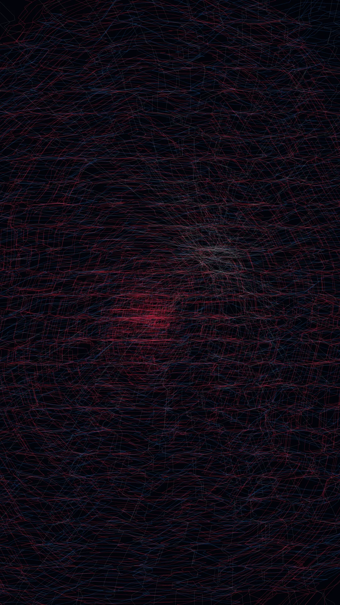
Moire v1 plate 10 — wild collision
Moire v1 plate 10 — wild collision from the make-check reference image set (guilloche/moire/surface tension). Source: outputs/ad-hoc/moire.v1/png/moire-10-wild-collision.png. WebP q82 review copy flattened on black.
-
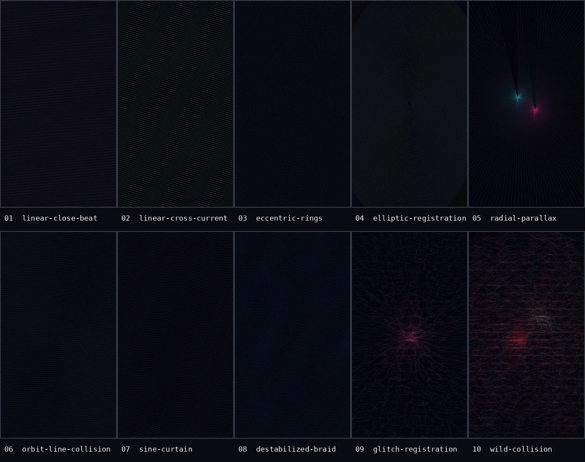
Moire v1 category grid
Moire v1 category grid from the make-check reference image set (guilloche/moire/surface tension). Source: outputs/ad-hoc/moire.v1/moire-v1-category-grid.png. WebP q82 review copy flattened on black.
-
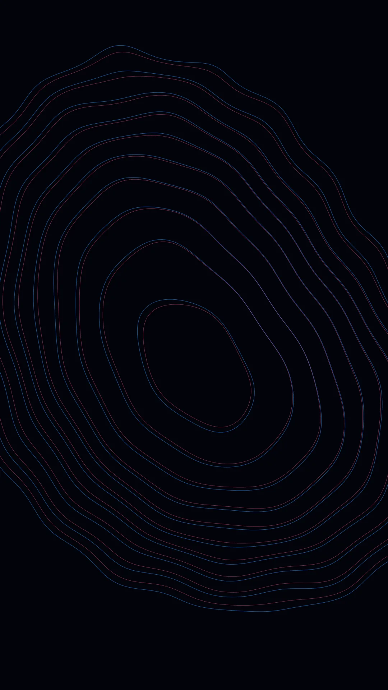
Surface tension v1 plate 01 — paired drops
Surface tension v1 plate 01 — paired drops from the make-check reference image set (guilloche/moire/surface tension). Source: outputs/ad-hoc/surface-tension.v1/png/surface-tension-01-paired-drops.png. WebP q82 review copy flattened on black.
-
Surface tension v1 plate 02 — triad membrane
Surface tension v1 plate 02 — triad membrane from the make-check reference image set (guilloche/moire/surface tension). Source: outputs/ad-hoc/surface-tension.v1/png/surface-tension-02-triad-membrane.png. WebP q82 review copy flattened on black.
-
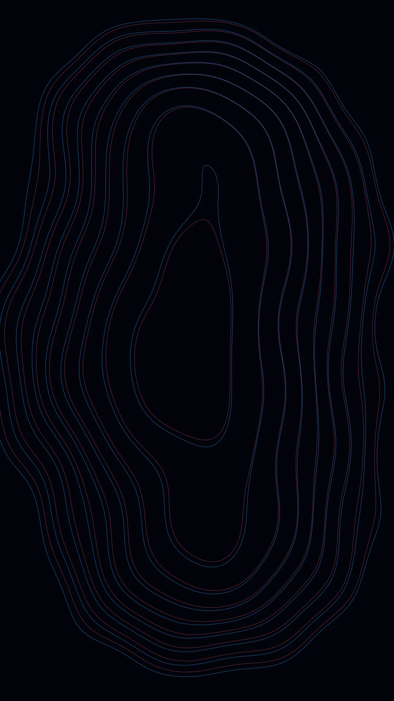
Surface tension v1 plate 03 — vertical chain
Surface tension v1 plate 03 — vertical chain from the make-check reference image set (guilloche/moire/surface tension). Source: outputs/ad-hoc/surface-tension.v1/png/surface-tension-03-vertical-chain.png. WebP q82 review copy flattened on black.
-
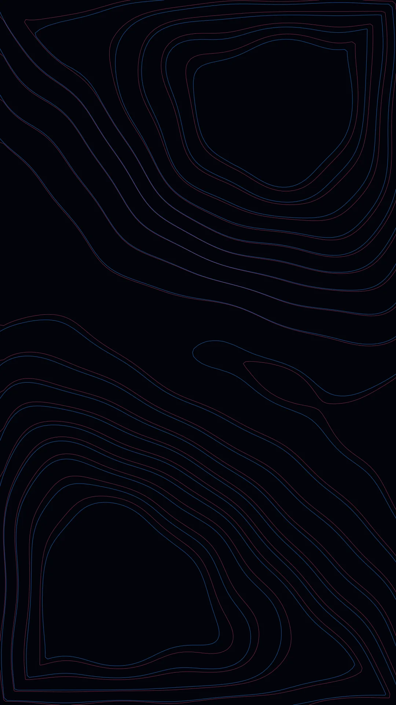
Surface tension v1 plate 04 — boundary cling
Surface tension v1 plate 04 — boundary cling from the make-check reference image set (guilloche/moire/surface tension). Source: outputs/ad-hoc/surface-tension.v1/png/surface-tension-04-boundary-cling.png. WebP q82 review copy flattened on black.
-
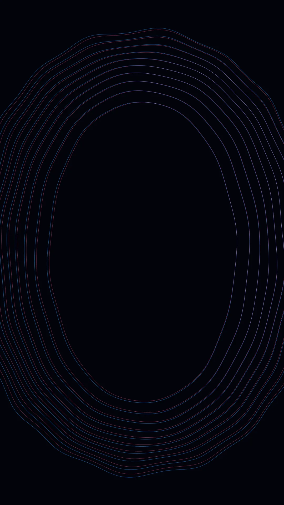
Surface tension v1 plate 05 — orbital droplets
Surface tension v1 plate 05 — orbital droplets from the make-check reference image set (guilloche/moire/surface tension). Source: outputs/ad-hoc/surface-tension.v1/png/surface-tension-05-orbital-droplets.png. WebP q82 review copy flattened on black.
-
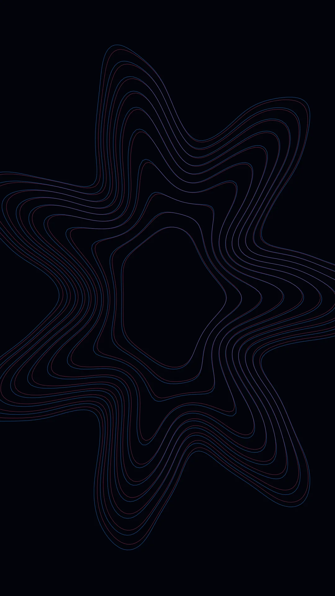
Surface tension v1 plate 06 — anisotropic petals
Surface tension v1 plate 06 — anisotropic petals from the make-check reference image set (guilloche/moire/surface tension). Source: outputs/ad-hoc/surface-tension.v1/png/surface-tension-06-anisotropic-petals.png. WebP q82 review copy flattened on black.
-
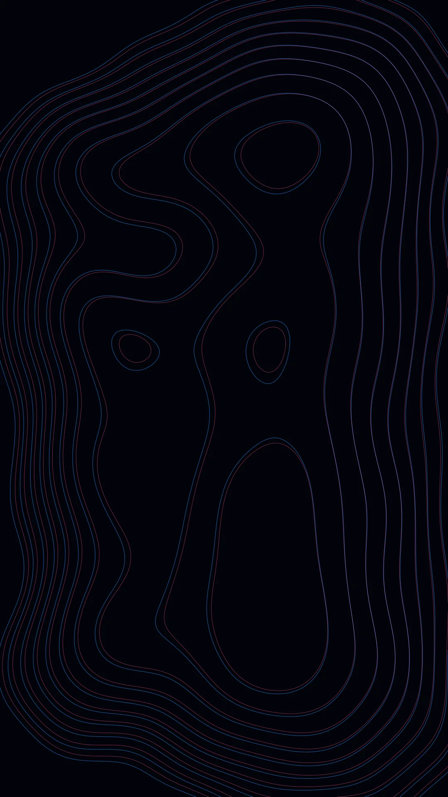
Surface tension v1 plate 07 — cellular foam
Surface tension v1 plate 07 — cellular foam from the make-check reference image set (guilloche/moire/surface tension). Source: outputs/ad-hoc/surface-tension.v1/png/surface-tension-07-cellular-foam.png. WebP q82 review copy flattened on black.
-
Surface tension v1 plate 08 — destabilized tide
Surface tension v1 plate 08 — destabilized tide from the make-check reference image set (guilloche/moire/surface tension). Source: outputs/ad-hoc/surface-tension.v1/png/surface-tension-08-destabilized-tide.png. WebP q82 review copy flattened on black.
-
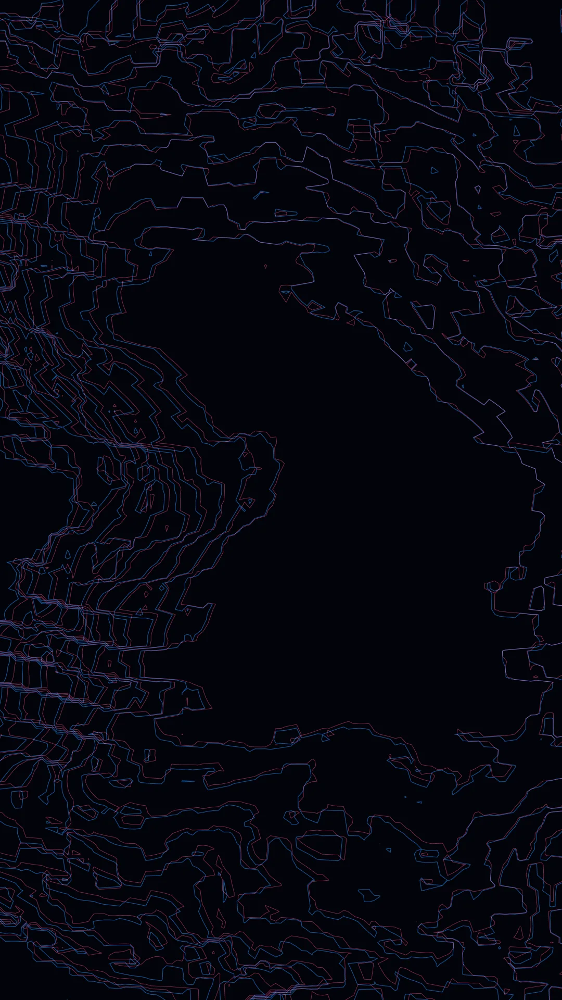
Surface tension v1 plate 09 — glitch rupture
Surface tension v1 plate 09 — glitch rupture from the make-check reference image set (guilloche/moire/surface tension). Source: outputs/ad-hoc/surface-tension.v1/png/surface-tension-09-glitch-rupture.png. WebP q82 review copy flattened on black.
-
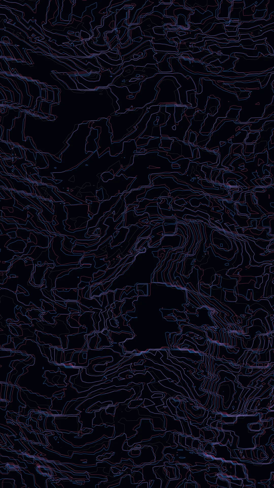
Surface tension v1 plate 10 — wild surface storm
Surface tension v1 plate 10 — wild surface storm from the make-check reference image set (guilloche/moire/surface tension). Source: outputs/ad-hoc/surface-tension.v1/png/surface-tension-10-wild-surface-storm.png. WebP q82 review copy flattened on black.
-
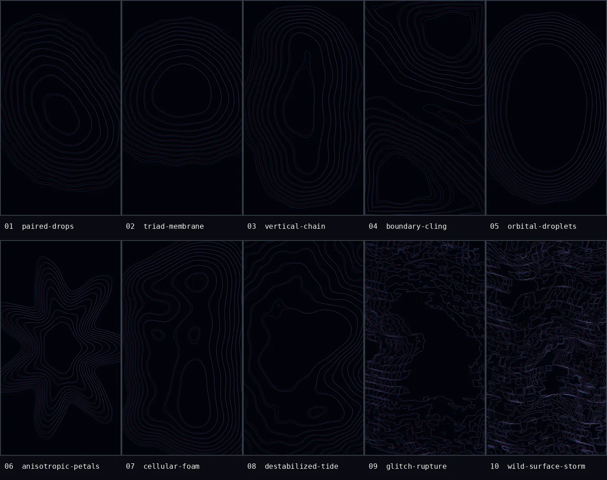
Surface tension v1 category grid
Surface tension v1 category grid from the make-check reference image set (guilloche/moire/surface tension). Source: outputs/ad-hoc/surface-tension.v1/surface-tension-v1-category-grid.png. WebP q82 review copy flattened on black.